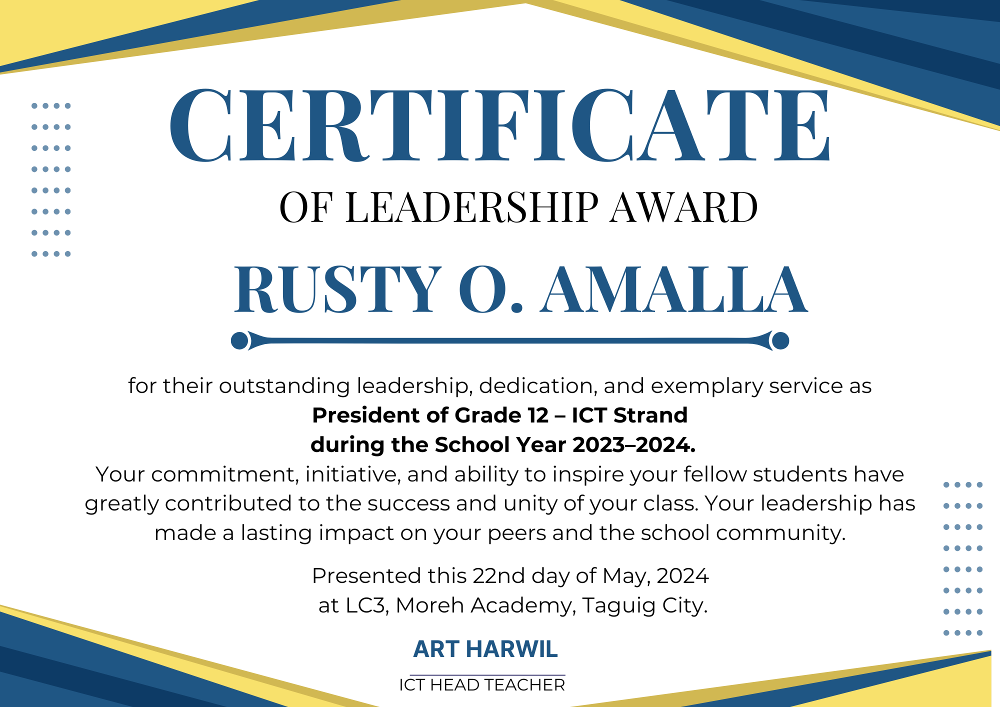
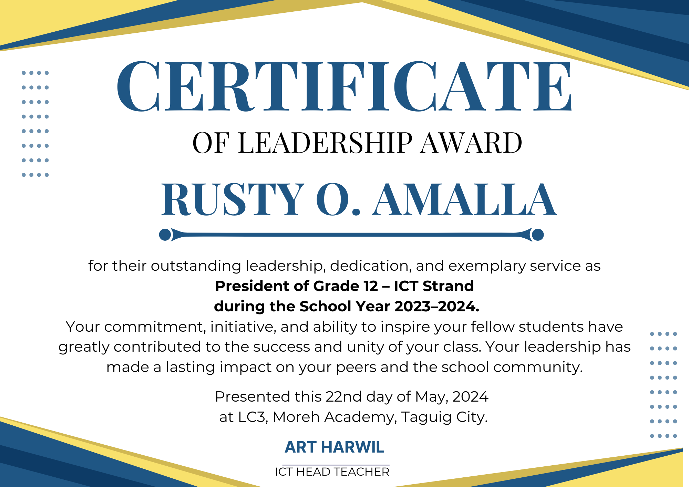
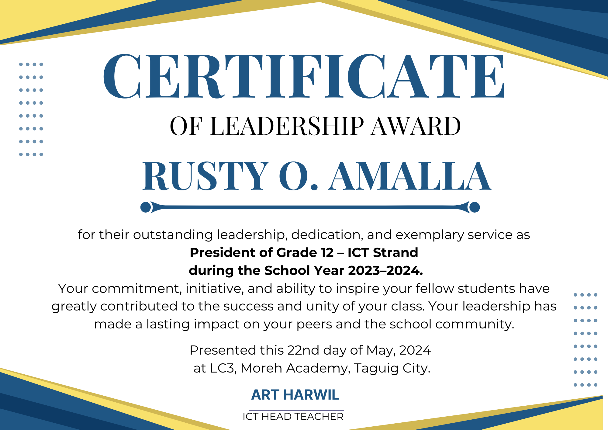

Certificates
 

I am an aspiring developer fueled by a passion for innovation, creativity, and continuous learning. With every project, I strive to grow, explore new ideas, and push the boundaries of what I can do. This portfolio is a reflection of my journey a space where skills, experience, and ambition come together. Dive in, explore my work, and join me as I build a future shaped by technology, purpose, and passion."
My name is Rusty O. Amalla, and I am from Barangay South Daang Hari, Purok 10 Extension, Taguig City. I am currently studying at STI College Alabang, pursuing a Bachelor of Science in Information Technology (BSIT), where I continue to nurture my passion for technology, innovation, and personal growth. I graduated from Moreh Academy, where I specialized in Information and Communications Technology (ICT). During my senior high school years, I was an active student leader and consistently recognized as an honor student. These experiences taught me the value of leadership, discipline, and teamwork qualities that I carry with me in everything I do. I am a hardworking, committed, and passionate individual with a strong interest in technology, design, and community service. I enjoy learning new things and sharing knowledge with others. Whether it’s enhancing my technical skills, volunteering in my community, or supporting fellow youth, I am always motivated by a desire to grow and make a meaningful impact. I firmly believe in continuous self-improvement. I embrace every challenge as an opportunity to learn and expand my abilities. My ultimate goal is to build a fulfilling career where I can apply my talents, contribute to society, and inspire others through my dedication and journey.
Responsive animated portfolio using HTML, CSS, and JavaScript.
More cool projects on the way!
